Décomposition, Attribution et Compréhension de la Dégradation du Polythiophène
C1s • Cl2p • S2p • O1s
Imaginez que vous éclairez un matériau avec une lumière très puissante (des rayons X). Cette lumière frappe les atomes et fait sortir des électrons. En mesurant la force nécessaire pour arracher ces électrons (appelée énergie de liaison), nous pouvons savoir à quel type d'atome ils appartenaient et à quoi ils étaient attachés. C'est exactement ce que fait la spectroscopie XPS.
Voici comment nous avons décomposé les signaux pour chaque élément afin de comprendre la structure chimique de notre polymère :
| Position (eV) | Type de liaison | Explication simple |
|---|---|---|
| ≈ 285.0 | C–C / C–H | Le cœur du polymère. Les atomes de carbone forment la chaîne principale. |
| ≈ 286.2 | C–dopant | Le carbone interagit avec les molécules qui rendent le polymère conducteur. |
| ≈ 287.6 | C–OH / C–Cl | Des groupements latéraux s'accrochent (oxygène ou chlore). |
| ≈ 289.0 | C=O | Un double liaison avec l'oxygène (carbonyle). C'est un signe de dégradation. |
| Position (eV) | Type de liaison | Explication simple |
|---|---|---|
| ≈ 200.5 | C–Cl | Le chlore s'est attaché directement au carbone du polymère. C'est une attaque chimique. |
| ≈ 207.0 | ClO₄⁻ (dopant) | L'ion perchlorate inséré dans le polymère pour le rendre conducteur. |
| ≈ 208.2 | ClO₄⁻ (piégé) | L'ion perchlorate qui est resté coincé sans interagir. |
| Position (eV) | Type de liaison | Explication simple |
|---|---|---|
| ≈ 164.0 | C–S–C | Le soufre fait partie intégrante du cycle thiophène (le monomère). |
| ≈ 165.5 | S⁺ | Le soufre a perdu un électron (charge positive). C'est le signe que le polymère est oxydé. |
| ≈ 167.8 | S=O | Le soufre s'est lié à un oxygène (sulfoxyde). |
| ≈ 169.1 | SO₂ | Le soufre s'est lié à deux oxygènes (sulfone). C'est une dégradation sévère. |
| Position (eV) | Type de liaison | Explication simple |
|---|---|---|
| ≈ 532.5 | C=O / S=O / ClO₄⁻ | Oxygène doublement lié (dégradation) ou provenant du dopant. |
| ≈ 533.5 | C–OH / H₂O | Oxygène lié simplement ou traces d'eau. |
| ≈ 535.0 | Contamination | Oxygène adsorbé à la surface de l'échantillon. |
Voici l'ensemble des spectres bruts et leurs décompositions. Chaque spectre est traité individuellement pour extraire les composantes chimiques expliquées dans la section précédente.
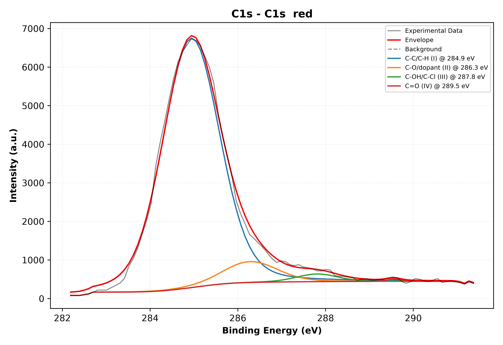
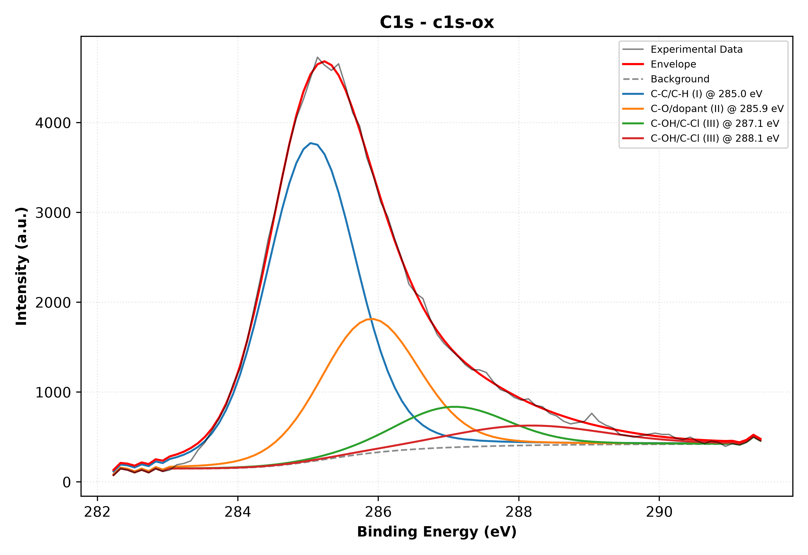
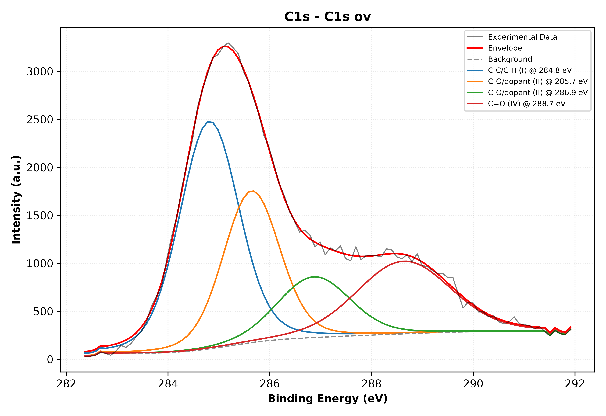
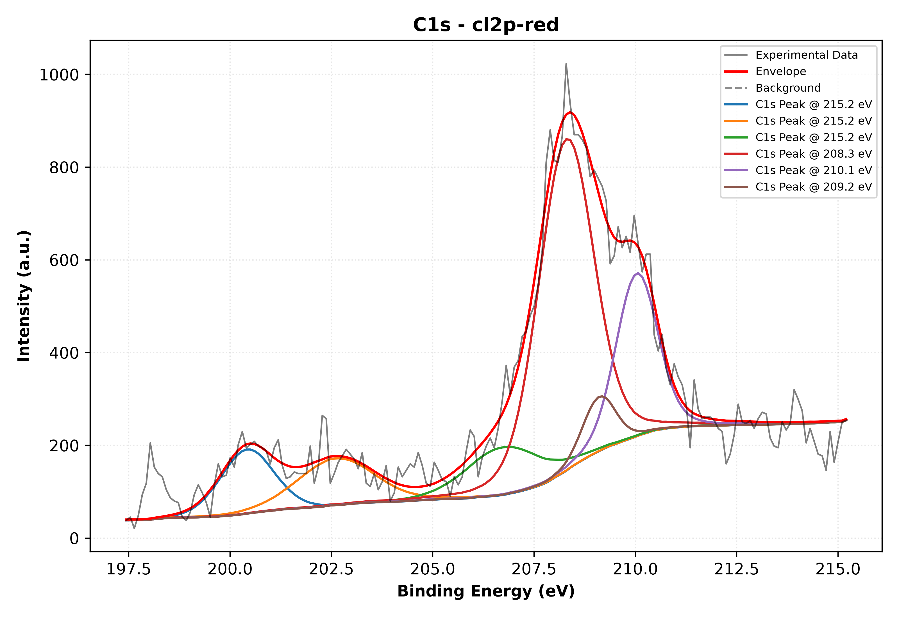
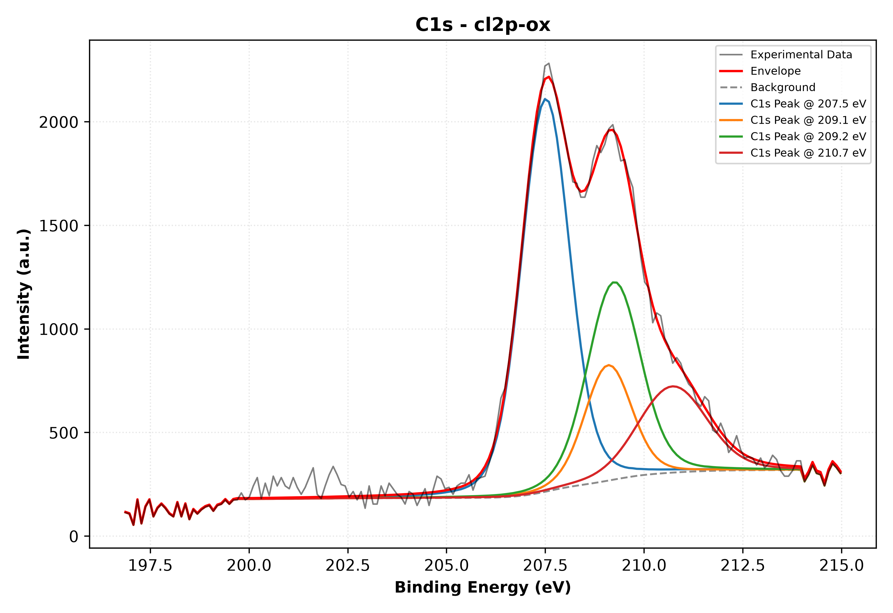
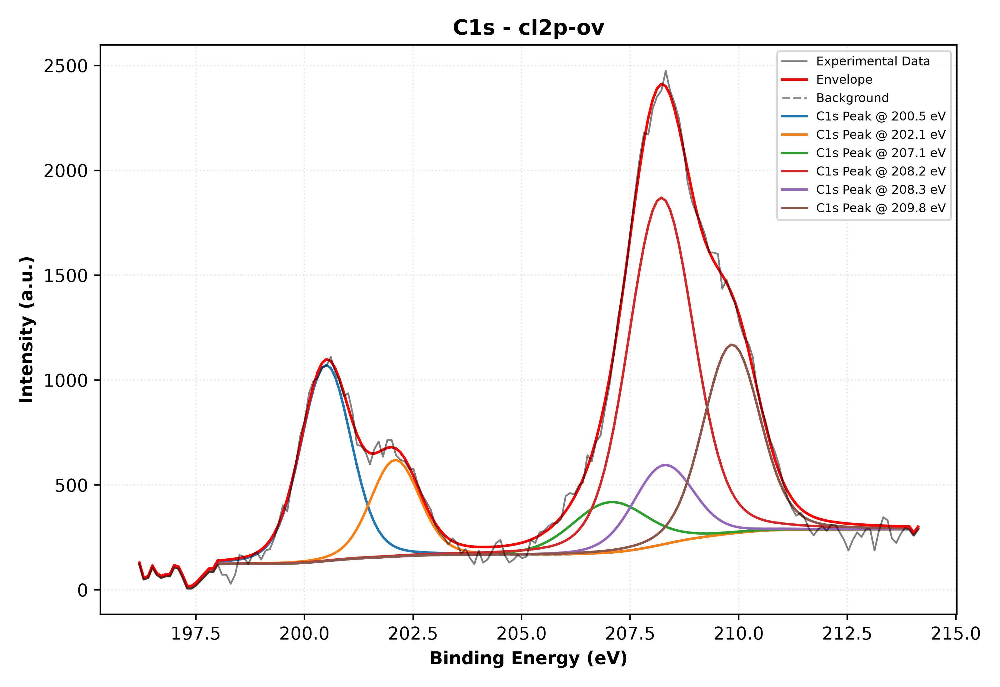
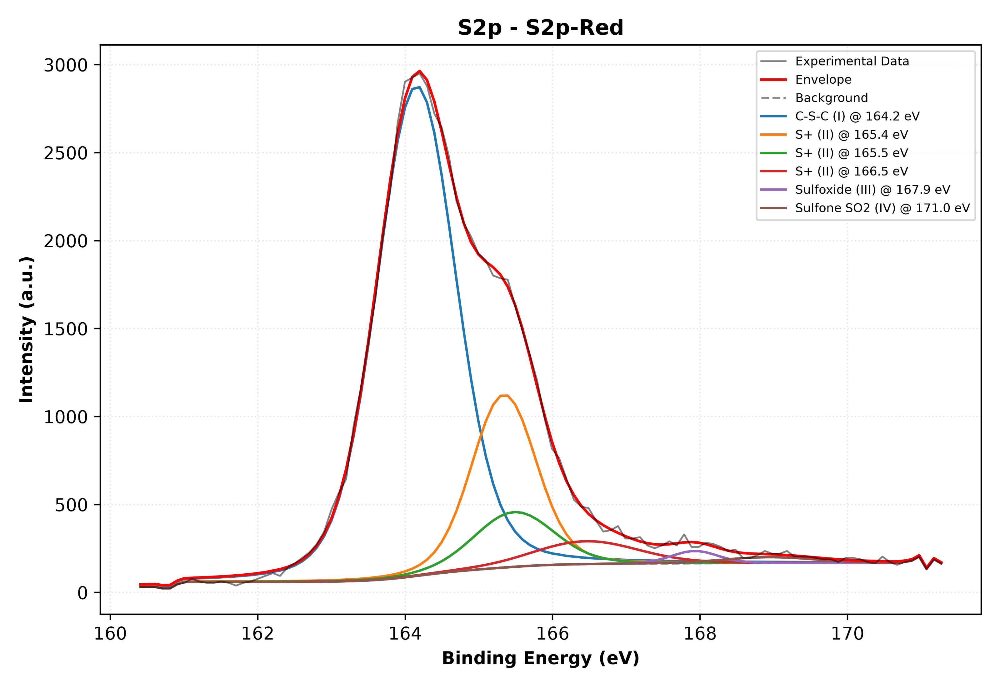
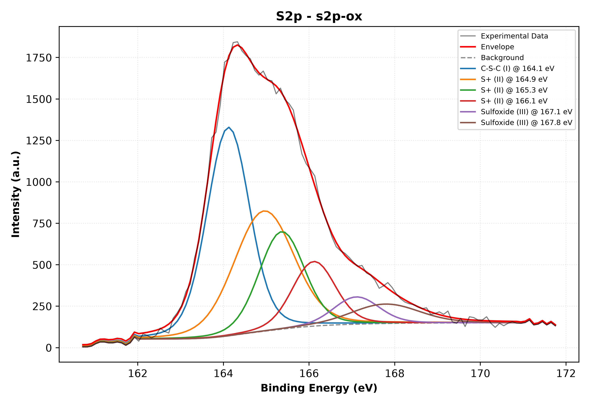
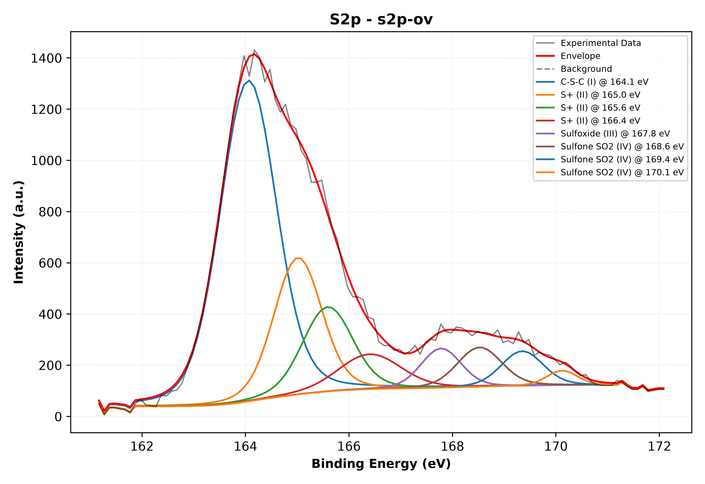
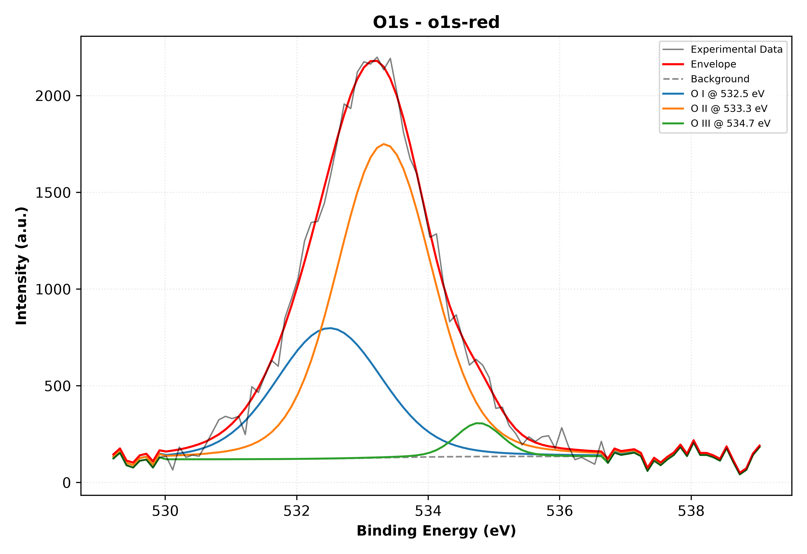
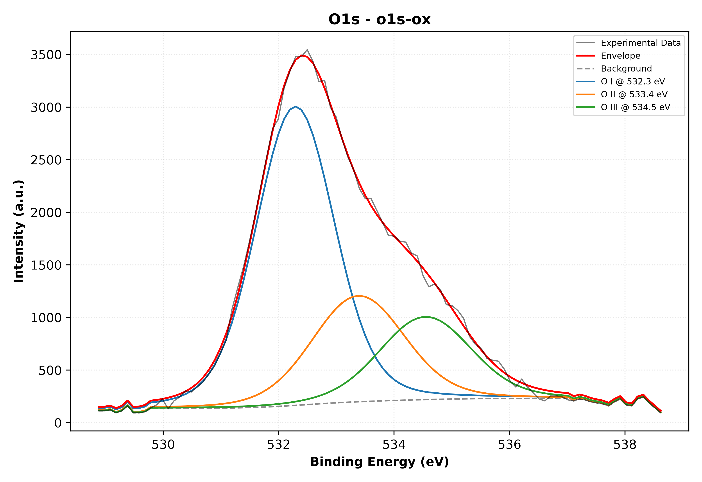
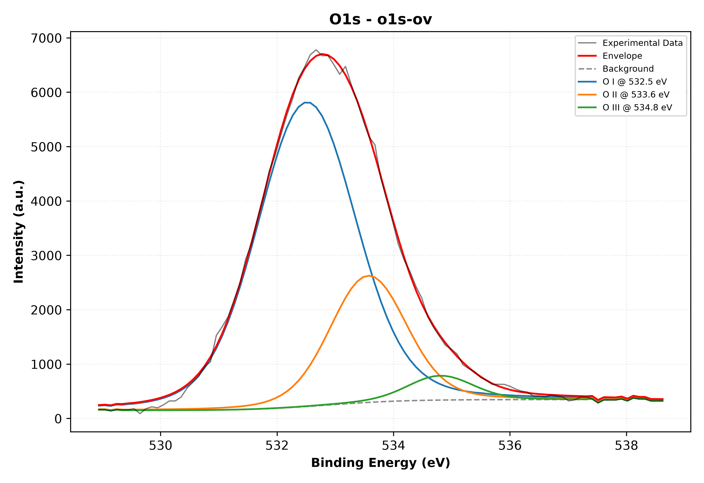
Les mesures brutes d'intensité (le nombre d'électrons comptés par la machine) ne sont pas directement proportionnelles au nombre d'atomes présents. Certains atomes sont plus "faciles" à détecter que d'autres. Pour corriger cela, nous utilisons des facteurs de sensibilité (Scofield factors).
La formule magique pour trouver le pourcentage atomique (At%) de chaque élément est :
Où I est l'aire du pic, et SF le facteur de sensibilité. Les facteurs pour notre source Al Kα sont : C1s = 1, Cl2p = 2.285, S2p = 1.677, O1s = 2.93.
À partir de nos spectres décomposés, nous avons estimé les aires des pics principaux pour chaque élément. Voici le calcul pour les trois états :
Résultats At% : C = 72.4% | O = 7.8% | S = 18.5% | Cl = 1.4%
Résultats At% : C = 58.0% | O = 15.1% | S = 14.3% | Cl = 12.7%
Résultats At% : C = 45.6% | O = 32.0% | S = 11.5% | Cl = 10.9%
En regroupant les calculs, voici la composition chimique de surface de nos trois échantillons. Cela nous montre comment les atomes s'organisent lorsque le polymère passe d'un état à l'autre.
| Échantillon | Carbone (C) % | Oxygène (O) % | Soufre (S) % | Chlore (Cl) % |
|---|---|---|---|---|
| PTRe (Réduit) | 72.4 | 7.8 | 18.5 | 1.4 |
| PTOx (Oxydé) | 58.0 | 15.1 | 14.3 | 12.7 |
| PTOv (Suroxydé) | 45.6 | 32.0 | 11.5 | 10.9 |
Le "dopage" est le processus qui rend le polymère conducteur. Il se fait par l'insertion d'ions perchlorate (ClO₄⁻) provenant de l'électrolyte. Pour mesurer ce taux, nous regardons le rapport entre le chlore sous forme de dopant (pic à 207 eV) et le soufre total (pic à 164 eV), qui représente le nombre de motifs du polymère.
| Échantillon | Rapport Cl207 / S164 | Interprétation |
|---|---|---|
| PTRe | ≈ 0.01 | Très faible. Le polymère est neutre, il n'y a presque pas de dopant. |
| PTOx | ≈ 0.27 | Maximum. Le polymère est bien dopé, les ions perchlorate sont insérés. |
| PTOv | ≈ 0.11 | En baisse. Le polymère se dégrade et perd sa capacité à retenir le dopant. |
Ce qu'il faut comprendre : Quand on oxyde le polymère (PTOx), le taux de dopage augmente, c'est normal. Mais quand on le suroxyde (PTOv), le taux de dopage chute. Pourquoi ? Parce que le polymère est tellement abîmé qu'il ne peut plus accueillir les ions dopants correctement. La conductivité est perdue.
L'électrolyte support (LiClO₄) est nécessaire pour que le courant passe. Mais lorsque le polymère est poussé à des potentiels très élevés (suroxydation), cet électrolyte devient un ennemi.
Les ions perchlorate (ClO₄⁻) peuvent se casser et libérer des ions chlore (Cl⁻). Ces ions chlore sont très réactifs. Ils attaquent les chaînes du polymère qui sont chargées positivement à cause de la suroxydation.
La dégradation (suroxydation) a des conséquences catastrophiques sur la structure du polymère. Voici ce que nos analyses XPS nous révèlent :
Conséquence macroscopique : Tous ces groupes latéraux (C=O, S=O, SO₂, C–Cl) créent des défauts stériques. Ils empêchent les chaînes de polymère de rester bien alignées et de conserver leur longueur de conjugaison. Le chemin pour les électrons est coupé. Le polymère perd sa conductivité et son activité électrochimique. Il devient un matériau isolant et cassant.
Ce script Python effectue la décomposition individuelle de chaque spectre pour les 4 éléments (C, Cl, S, O) et les 3 états d'oxydation (Red, Ox, Ov). Il suffit de lui fournir les fichiers CSV correspondants (ex: C1s-Red.csv, Cl2p-Ox.csv, etc.) et il génère les graphiques de décomposition et les pourcentages atomiques.
# ============================================================
# ANALYSE XPS COMPLÈTE — DÉCOMPOSITION INDIVIDUELLE
# Polythiophène (PT_Re / PT_Ox / PT_Ov)
# ============================================================
import numpy as np
import pandas as pd
import matplotlib.pyplot as plt
from scipy.optimize import curve_fit
from scipy.special import wofz
# ------------------------------------------------------------
# 1) Fonctions d'ajustement (Voigt + ligne de base)
# ------------------------------------------------------------
def voigt(x, amp, cen, sigma, gamma):
"""Profil de Voigt (gaussienne ⊗ lorentzienne)"""
z = ((x - cen) + 1j * gamma) / (sigma * np.sqrt(2))
return amp * np.real(wofz(z)) / (sigma * np.sqrt(2 * np.pi))
def linear_baseline(x, a, b):
return a * x + b
def multi_peaks(x, *params):
"""Modèle multi-pics générique"""
a, b = params[0], params[1]
y = linear_baseline(x, a, b)
n = (len(params) - 2) // 4
for i in range(n):
amp, cen, sigma, gamma = params[2 + 4*i : 6 + 4*i]
y += voigt(x, amp, cen, sigma, gamma)
return y
# ------------------------------------------------------------
# 2) Lecture des données
# ------------------------------------------------------------
def load_xps(filepath):
"""Lit un fichier CSV à deux colonnes : BE, Intensity"""
df = pd.read_csv(filepath, comment='#', sep=r'\s+|,',
engine='python', header=None,
names=['BE', 'Intensity'])
df = df.dropna().sort_values('BE')
return df['BE'].values, df['Intensity'].values
# ------------------------------------------------------------
# 3) Ajustement générique pour un spectre donné
# ------------------------------------------------------------
def fit_spectrum(be, intensity, p0, bounds, label='Spectre', element='C1s'):
"""
Effectue l'ajustement et trace le résultat.
p0 : paramètres initiaux [(amp, cen, sigma, gamma), ...]
bounds : (lower_bounds, upper_bounds) pour chaque paramètre
"""
popt, _ = curve_fit(multi_peaks, be, intensity, p0=p0,
bounds=bounds, maxfev=30000)
yfit = multi_peaks(be, *popt)
n = (len(popt) - 2) // 4
# Calcul des aires
areas = []
for i in range(n):
amp, cen, sigma, gamma = popt[2+4*i : 6+4*i]
area = amp * sigma * np.sqrt(2*np.pi)
areas.append(area)
# Tracé
fig, ax = plt.subplots(figsize=(8, 5))
ax.plot(be, intensity, 'o', ms=2, color='#1f77b4', label='Données')
ax.plot(be, yfit, '-', color='#d62728', lw=1.8, label='Ajustement')
for i in range(n):
amp, cen, sigma, gamma = popt[2+4*i : 6+4*i]
ax.plot(be, voigt(be, amp, cen, sigma, gamma),
'--', lw=1.2, label=f'Pic {i+1} @ {cen:.1f} eV')
ax.plot(be, linear_baseline(be, popt[0], popt[1]),
':', color='gray', label='Ligne de base')
ax.set_xlabel('Énergie de liaison (eV)')
ax.set_ylabel('Intensité (CPS)')
ax.set_title(f'Décomposition {element} — {label}')
ax.invert_xaxis()
ax.legend(fontsize=8)
ax.grid(alpha=0.3)
plt.tight_layout()
plt.savefig(f'{element}_{label}_decomp.png', dpi=200)
plt.close()
return popt, areas
# ------------------------------------------------------------
# 4) Paramètres initiaux pour chaque élément et chaque état
# ------------------------------------------------------------
# Format : p0 = [a, b, (amp, cen, sigma, gamma) × n]
# Les bornes (bounds) sont définies pour chaque pic.
# --- C1s (4 pics) ---
p0_C1s = [0.0, 1000,
5000, 285.0, 0.7, 0.5,
1500, 286.2, 0.8, 0.6,
1000, 287.6, 0.9, 0.6,
500, 289.0, 1.0, 0.7]
bounds_C1s = (
[-np.inf, -np.inf, 0, 284.0, 0.3, 0.0, 0, 285.5, 0.3, 0.0, 0, 286.8, 0.3, 0.0, 0, 288.0, 0.3, 0.0],
[np.inf, np.inf, np.inf, 286.0, 2.5, 2.5, np.inf, 287.0, 2.5, 2.5, np.inf, 288.5, 2.5, 2.5, np.inf, 290.5, 2.5, 2.5]
)
# --- Cl2p (3 doublets -> simplifié en 3 pics principaux) ---
p0_Cl2p = [0.0, 500,
2000, 200.5, 0.8, 0.6,
2000, 207.0, 0.8, 0.6,
2000, 208.2, 0.8, 0.6]
bounds_Cl2p = (
[-np.inf, -np.inf, 0, 199.0, 0.3, 0.0, 0, 206.0, 0.3, 0.0, 0, 207.5, 0.3, 0.0],
[np.inf, np.inf, np.inf, 202.0, 2.5, 2.5, np.inf, 208.5, 2.5, 2.5, np.inf, 209.5, 2.5, 2.5]
)
# --- S2p (3 doublets -> simplifié en 4 pics) ---
p0_S2p = [0.0, 500,
3000, 164.0, 0.8, 0.6,
1000, 165.5, 0.8, 0.6,
500, 167.8, 0.9, 0.7,
200, 169.1, 1.0, 0.7]
bounds_S2p = (
[-np.inf, -np.inf, 0, 163.0, 0.3, 0.0, 0, 164.5, 0.3, 0.0, 0, 166.5, 0.3, 0.0, 0, 168.0, 0.3, 0.0],
[np.inf, np.inf, np.inf, 165.5, 2.5, 2.5, np.inf, 167.0, 2.5, 2.5, np.inf, 169.0, 2.5, 2.5, np.inf, 170.5, 2.5, 2.5]
)
# --- O1s (3 pics) ---
p0_O1s = [0.0, 500,
2000, 532.5, 1.0, 0.8,
1500, 533.5, 1.0, 0.8,
500, 535.0, 1.2, 0.8]
bounds_O1s = (
[-np.inf, -np.inf, 0, 531.5, 0.5, 0.0, 0, 532.5, 0.5, 0.0, 0, 534.0, 0.5, 0.0],
[np.inf, np.inf, np.inf, 533.5, 3.0, 3.0, np.inf, 534.5, 3.0, 3.0, np.inf, 536.5, 3.0, 3.0]
)
# ------------------------------------------------------------
# 5) Exécution de l'analyse sur les 12 spectres
# ------------------------------------------------------------
elements = {
'C1s': (p0_C1s, bounds_C1s),
'Cl2p': (p0_Cl2p, bounds_Cl2p),
'S2p': (p0_S2p, bounds_S2p),
'O1s': (p0_O1s, bounds_O1s)
}
etats = ['Red', 'Ox', 'Ov']
for el, (p0, bnds) in elements.items():
for etat in etats:
filename = f'{el}-{etat}.csv'
try:
be, intensity = load_xps(filename)
popt, areas = fit_spectrum(be, intensity, p0, bnds, label=etat, element=el)
print(f"--- {el} / {etat} ---")
print(f" Aires des pics : {np.round(areas, 1)}")
print(f" Pourcentages : {np.round(100 * np.array(areas) / np.sum(areas), 1)} %")
print()
except FileNotFoundError:
print(f"Fichier {filename} introuvable. Veuillez le placer dans le dossier du script.\n")
print("Analyse terminée. Les graphiques de décomposition ont été sauvegardés.")
numpy, pandas, matplotlib et scipy.C1s-Red.csv) dans le même dossier que le script.